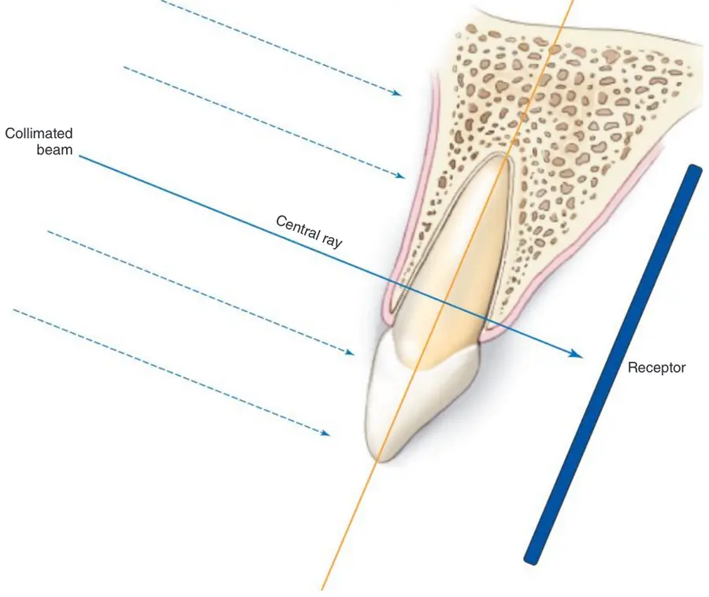
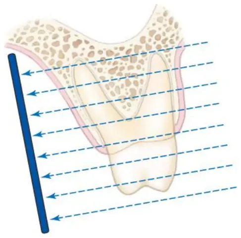

نسخه استخراجشده؛ ترجمه یا تأیید علمی انجام نشده است. وضعیت: captured
تکنیک موازی، روش ارجح است — و نامهای دیگرش خودشان منطقش را میگویند: تکنیک زاویهی قائم یا تکنیک مخروط بلند.

و اصل مرکزیاش: «گیرنده موازی با محور بلند دندانها نگه داشته میشود و پرتو مرکزی در زاویهی قائم بر دندانها و گیرنده هدایت میشود.» و نتیجهاش: «این جهتگیری، اعوجاج هندسی را به کمترین میرساند و دندانها و استخوان حمایتی را در روابط آناتومیک واقعیشان نشان میدهد.»
و چرا ترجیح دارد: «تصاویری با اعوجاج کمتر دندانها فراهم میکند» و «بهترین تجسم اصول تصویربرداری» است.
ولی این تکنیک یک بها دارد — و دانستن آن، تکنیک را قابل فهم میکند: «برای رسیدن به این جهتگیری موازی، پزشک اغلب باید گیرنده را به سمت میانهی حفرهی دهان و دور از دندانها قرار دهد. هرچند این کار دندانها و گیرنده را موازی میکند، فاصلهی جسم-تا-گیرنده را زیاد میکند، که به بزرگنمایی تصویر و ناواضحی هندسی میانجامد.»
و راه جبرانش: «برای غلبه بر این محدودیتها، تکنیک موازی از یک سیلندر هدفگیر باز و نسبتاً بلند («مخروط») برای افزایش فاصلهی منبع-تا-جسم استفاده میکند. این «مخروط» تنها مرکزیترین و موازیترین پرتوها را به گیرنده و دندانها هدایت میکند و بزرگنمایی را کم و وضوح را زیاد میکند.»
و سه طول استاندارد مخروط: «این مخروطهای افزایشی طوری طراحی شدهاند که فاصلههای منبع-تا-جسم ۸، ۱۲ یا ۱۶ اینچ بدهند.»
و جایگذاری درست گیرنده: «گیرنده باید موازی با دندانها و عمیق در وستیبول لینگوال یا سقف کام قرار گیرد؛ این بهویژه وقتی سنسورهای سفت استفاده میشوند مهم است، چون حجیمتر از فیلماند.» برای ماگزیلا، «مرز فوقانی گیرنده عموماً در ارتفاع سقف کام در خط وسط مینشیند». برای مندیبل، «گیرنده باید زبان را به عقب یا به سمت خط وسط براند تا مرز تحتانی گیرنده روی کف دهان و دور از مخاط سطح لینگوال مندیبل بنشیند».
و محدودیتهای آناتومیک که کار را سخت میکنند: «کام کمعمق، کف دهان کمعمق، و توروسها» میتوانند مانع از جایگذاری بهاندازهی کافی عمیق شوند. و محدودیت دوم: «همهی ریشههای یک دندان چندریشهای نمیتوانند موازی با گیرنده قرار گیرند، که به اعوجاج نابرابر ریشهها میانجامد.»
و ابزار کار: نگهدارندهها گیرنده را به یک بایتبلاک تثبیت میکنند. و یک ویژگی ضروری: «مهم است از نگهدارندهای استفاده شود که رینگ راهنمای بیرونی دارد. این رینگ برای همراستا کردن کولیماتور به کار میرود؛ اطمینان میدهد که پرتو روی گیرنده مرکز شده و بر گیرنده و دندانها عمود است.» و «کولیماتورهای مستطیلی باید برای کاهش دوز پرتو بیمار استفاده شوند».
تکنیک نیمساز بر یک قضیهی هندسی ساده بنا شده: «قاعدهی تساوی چیژینسکی، که میگوید دو مثلث برابرند وقتی یک ضلع کامل مشترک داشته باشند و دو زاویهی برابر.»

و کاربردش در رادیوگرافی: گیرنده تا حد ممکن نزدیک به سطح لینگوال دندانها قرار میگیرد. «صفحهی گیرنده و محور بلند دندانها زاویهای میسازند که رأسش در لبهی برنده یا سطح اکلوزال است.
خطی خیالی این زاویه را نصف میکند و پرتو مرکزی در زاویهی قائم بر این نیمساز هدایت میشود. این دو مثلث با دو زاویهی برابر و یک ضلع مشترک (نیمساز خیالی) میسازد. وترهای دو مثلث، طول واقعی دندان و طول تصویر را نشان میدهند؛ نظراً یکساناند.»
پس دستاوردش دقیق است: «طول تصویر دندان با طول واقعی دندان مطابقت میکند.» ولی...
و سه محدودیتش را باید بدانی:
و جایگاه امروزیاش: «در سالهای اخیر، تکنیک نیمساز کمتر برای رادیوگرافی پریاپیکال عمومی به کار میرود، چون استفاده از تکنیک موازی افزایش یافته است.» ولی هنوز مفید است «وقتی پزشک بهدلیل سنسورهای سفت بزرگ یا آناتومی بیمار نتواند تکنیک موازی را به کار ببرد».
و حالا جدول زاویههای عمودی — شمال آمریکا:
| ناحیه | ماگزیلا | مندیبل |
|---|---|---|
| انسیزور | +۴۰ | −۱۵ |
| کانین | +۴۵ | −۲۰ |
| پرمولر | +۳۰ | −۱۰ |
| مولر | +۲۰ | −۵ |
و قرارداد علامت را حفظ کن: «صفحهی اکلوزال موازی با کف قرار میگیرد. طبق قرارداد، با زاویهی مثبت (+) سیلندر هدفگیر رو به پایین است، و با زاویهی منفی (−) رو به بالا.»
و یک هشدار دربارهی این اعداد: «زاویههای از پیش تعیینشده بر پایهی آناتومی معمول فک انساناند و برای هر بیمار سفارشی نشدهاند. اغلب رادیوگرافر باید این زاویهها را برای تنوع آناتومیک مانند پروکلیناسیون دندانها تنظیم کند.»
و دو نکتهی اجرایی: لبهی گیرنده باید حدود ۱ تا ۲ میلیمتر فراتر از لبهی برنده یا سطح اکلوزال امتداد یابد، و فیلم نباید بیش از حد خم شود — خم شدن، تصویر را مخدوش میکند. و زاویهی افقی عمدتاً درجهی همپوشانی تاجها را تعیین میکند: پرتو مرکزی باید از میان کانتکتها بگذرد.
و مهمترین قاعدهی عیبیابی این درس: «کوتاهشدگی تصویر نشان میدهد زاویهی عمودی بیش از حد بالاست. در مقابل، کشیدگی تصویر نشان میدهد زاویهی عمودی ناکافی است.»
و آنچه هرگز نباید بکنی: «نامطلوب است که بیمار گیرنده را با انگشت خود از سطح لینگوال نگه دارد. بیماران اغلب نیروی بیش از حد به کار میبرند و میتوانند فیلم یا فسفرپلیت را خم کنند و تصویر را مخدوش سازند. همچنین گیرنده میتواند بلغزد. و سرانجام، بدون راهنمای بیرونی، پرتو میتواند بخشی از گیرنده را از دست بدهد و به تصویر ناقص (کونکات) بینجامد.»